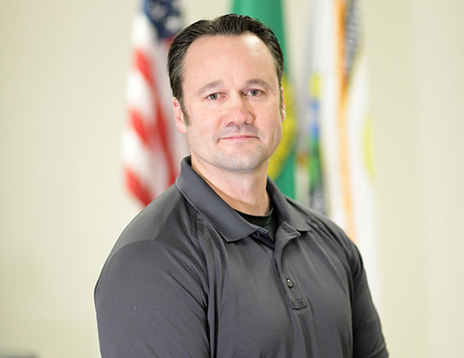

<div id="content" class="site-content"><div><div id="primary"><main id="main"><article id="post-2931" itemtype="https://schema.org/CreativeWork" itemscope="itemscope"><div itemprop="text"><div data-elementor-type="wp-page" data-elementor-id="2931" data-elementor-post-type="page">
<section data-id="e380e14" data-element_type="section" data-settings='{"background_background":"classic"}'><div><div data-id="e021e9d" data-element_type="column"><div><div data-id="02f25c0" data-element_type="widget" data-settings='{"ekit_we_effect_on":"none"}' data-widget_type="heading.default"><div><h2>City Council</h2></div></div></div></div></div></section><section data-id="f49e324" data-element_type="section" data-settings='{"stretch_section":"section-stretched","background_background":"classic"}'></section><section data-id="76587a6" data-element_type="section"><div>
<div data-id="96e66bf" data-element_type="column"><div>
<div data-id="2d0b7b9" data-element_type="widget" data-settings='{"ekit_we_effect_on":"none"}' data-widget_type="heading.default"><div><h2>Councilmember Kevin Richey</h2></div></div>
<div data-id="ba91b20" data-element_type="widget" data-settings='{"ekit_we_effect_on":"none"}' data-widget_type="text-editor.default"><div>
<p>Councilmemberr Kevin Richey grew up in Walla Walla. After four years in the US Air Force, he and his wife Valerie moved to the Spokane area in 2000. They moved to Airway Heights in January of 2007. They have four kids, two boys and two girls. His oldest boy is currently serving in the USMC.</p>
<p>Kevin has been serving on the City Council since 2008. He worked for the Spokane Transit Authority for two years before beginning his career in law enforcement with the Spokane County Sheriff’s Office in 2003. He is currently a Detective in the Major Crimes Domestic Violence Unit. By serving on the City Council Kevin hopes to help promote pride in the community and improve the quality of life for its residents. “I feel that my experience in public service and law enforcement will be a great asset to the community, especially in the arena of public safety and civic pride. The City of Airway Heights continues to grow. It is important to ensure public safety and infrastructure keeps pace with growth to maintain the quality of life our city has come to enjoy.” </p>
</div></div>
</div></div>
<div data-id="f5806ae" data-element_type="column" data-settings='{"animation":"fadeInRight"}'><div><div data-id="cabe2b1" data-element_type="widget" data-settings='{"ekit_we_effect_on":"none"}' data-widget_type="image.default"><div></div></div></div></div>
</div></section>
</div></div></article></main></div></div></div>
